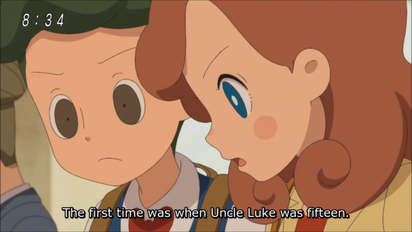
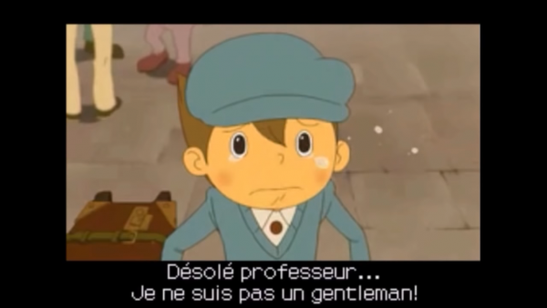
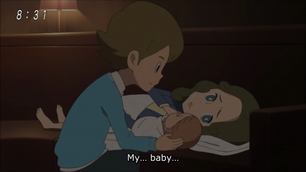

![[ANA JDG] Asterix and the Great Rescue - Megadrive](../vi/6oUXi0ckLmA/default.jpg)
![[ Présentation pour la chaîne Grenier des Joueurs ] JDG Prod](../art/SHAR.6419.583.2.jpg)


ATTENTION SPOILS AUTOUR DE LA SAGA PROFESSEUR LAYTON
Lorsqu'on joue aux jeux DS et 3DS de Professeur Layton, on apprend qu'il y a une chronologie qui sont liés par 3 personnages: Luke, Descole et Flora !
En effet, même si le premier jeu sortit est l'Étrange Village ( 2008 ) et donc marque la première apparition de Flora, Luke est déjà avec Layton... alors que dans l'Appel du Spectre ( 2011 ), Professeur Layton prend en charge Luke sur la demande du maire et père du petit garçon !
Tenez, en parlant de Luke, on sait que c'est à la fin du Destin Perdu ( 2010 ) qu'il part en Amérique...comme si la licence "Professeur Layton" marquait sa fin !
Mais revenons à Flora qui apparaît dans 3 jeux: Étrange Village, Destin Perdu et Boite de Pandore ( 2009 ) !
On est donc sur un trio de jeu qui n'apporte que des informations sur Layton, Luke et Flora ... mais qu'en est-il de Descole ?
Descole n'apparaît que dans 3 jeux: Appel du Spectre,Masque des Miracles ( 2011 ) et Héritages des Aslantes ( 2013 ).
On sait qu'à la fin de l'Héritage des Aslantes, Layton mentionne l'Étrange Village en post-crédit dans sa voiture avec Luke avant un bon vieux "À suivre" ! Cela connecte donc la partie "Descole" ( 2009-2013 (JAP) 2011-2013 (EU) )
avec la partie "Flora" ( 2007-2008 (JAP) 2008-2010 (EU) ).
Donc, on peut résumé la chronologie des jeux DS et 3DS de la saga Layton de cette manière:
Appel du Spectre, Masque des Miracles, Héritage des Aslantes, Étrange Village, Boite de Pandore et Destin Perdu .
La raison pour laquelle on voit Flora et Descole dans le film "La Diva Éternelle" ( 2009 ) est dû au fait que l'introduction se situe entre l'Étrange Village et la Boite de Pandore et que, quand Luke commence à radoter sur l'enquête relative au vinyle, le reste se passe entre l'Appel du Spectre et Le Masque des Miracles !
Voila !
Ajout du 26 octobre 2019
Dans l'anime "Layton's Mystery Detective Agency - The Ancient Relics Saga" où on suit la première aventure de Katrielle Layton, Desmond Sycamore est visible à la toute fin lorsque Layton révèle qu'il a demandé à des astronomes et chercheurs de l'aidé à résoudre un problème de calcul sur un astéroïde risquant de détruire le monde... C'est idiot parce que Sycamore n'est pas astronome mais archéologue spécialisé sur la civilisation des Atlantes... DONC RIEN À VOIR AVEC L'ESPACE !!!

Mais il est fort probable que celui qui fût Jean Descole (je vous avais dis qu'il y avait du spoil dans cet article ? Tant mieux ! ) a repris des études ou s'est juste trouvé un autre objectif de vie après avoir été dégoûté du terrible héritage des Atlantes. En même temps, je reviens sur la chronologie avec la notion d'âge de Luke !
Luke avait 12 ans dans l'Héritage des Atlantes et il est censé en avoir 15+11 soit 26 ans dans l'anime introduisant Katrielle !
Ce qui signifie que (26-12) ça fait 14 ans que Sycamore/Descole fait une activité pour se maintenir en vie après sa petite pensée suicidaire à la fin de l'Héritage des Atlantes !
14 ans, c'est large pour faire des études et/ou trouver un hobby et s'y spécialisé ! Notre Sycamore a donc probablement la tête dans les étoiles à tiré des plans sur la comète
( Comme Rufus Aldebaran... hi hi hi )!

OH mais je peux situer dans le temps l'anime de Katrielle avec ça ! Dans la Boite de Pandore, Luke a 14 ans donc s'il a trouvé Katrielle à 15 ans... ça veut dire que Luke a dangereusement changé de Design entre la fin du Destin Perdu et l'anime Katrielle !
(il a dû prendre 50 centimètres en 1 an, le chanceux Luke...lisez cette dernière phrase en anglais ! C'est rigolo !)


Voila !
Ajout du 6 Avril 2020
Non, Luke ne peut avoir 15 ans lorsqu'il quitte Layton dans le Destin Perdu ! C'était drôle mais c'est pas vrai !
Le physique ne colle pas, Clive avait 13 ans lorsqu'il a tout perdu ( 10 ans avant le Destin Perdu ) donc il est censé avoir 13 ans notre Luke !
Du coup, dans la timeline des âges de Luke :
Appel du Spectre : 10 ans
Masque des Miracles : 11 ans
Héritage des Aslantes : 12 ans
Étrange Village : 12 ans
Boite de Pandore : 13 ans
Destin Perdu : 13 ans
Vu qu'on les âges de Luke, autant faire celle de Layton à partir du fait qu'on sait qu'il a 37 ans dans le Destin Perdu :
Masque des Miracles : 35 ans
Héritage des Aslantes : 36 ans
Étrange Village : 36 ans
Boite de Pandore : 37 ans
Destin Perdu : 37 ans
Voila, je pourrais tenté de savoir les âges d'Emmy et Descole plus tard !


![[Idées de Jeux-vidéos]Saint & Démon:The Monday](../5252/79895252/pics/3267039352_1_3_0SZ0nRqh.png)


![[La p'tite discute]Kidpaddleetcie à Le Masque!](../5252/79895252/pics/3266081672_1_3_neZn4kzA.png)

![[Jeu-Vidéo]Le succès de certaine entreprise](../5252/79895252/pics/3256678832_1_7_DyGeEr9F.jpg)
![[Jeu-Vidéo]Le succès de certaine entreprise](../5252/79895252/pics/3256678832_1_9_Cpaji0DS.png)
![[Jeu-Vidéo]Le succès de certaine entreprise](../5252/79895252/pics/3256678832_1_13_hV8zwALP.jpg)
![[Jeu-Vidéo]Le succès de certaine entreprise](../5252/79895252/pics/3256678832_1_17_oUJQaH3x.jpg)
![[Mon Avis sur]Pixels,le film de 2015!](../5252/79895252/pics/3256323456_1_3_2amp0dmt.jpg)
![[Jeux-Vidéos]Pokémon Rumble World](../5252/79895252/pics/3250201136_1_3_7NDJqn9B.jpg)
![[Jeux-Vidéos]Pokémon Rumble World](../5252/79895252/pics/3250201136_1_5_WBBCg8vi.jpg)
![[Jeux-Vidéos]Pokémon Rumble World](../5252/79895252/pics/3250201136_1_7_j8QnvhNk.jpg)
![[Jeux-Vidéos]Pokémon Rumble World](../5252/79895252/pics/3250201136_1_11_kVeJveb3.jpg)
![[Jeux-Vidéos]Pokémon Rumble World](../5252/79895252/pics/3250201136_1_13_DU9MXEbl.jpg)
![[Jeux-Vidéos]Pokémon Rumble World](../5252/79895252/pics/3250201136_1_15_uD28LAS0.jpg)
![[Jeux-Vidéos]Pokémon Rumble World](../5252/79895252/pics/3250201136_1_17_2PpEq9A1.jpg)
{kind=link}
Partage